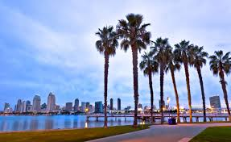
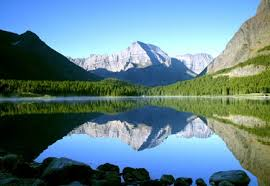
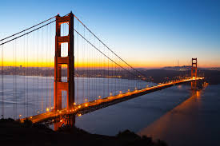
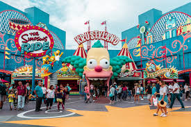
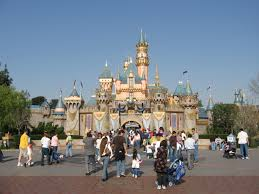

Los Anđeles

Poznatiji i kao Grad anđela, sa populacijom od oko 4 miliona i 13 miliona šireg gradskog područja je najveći grad Kalifornije i drugi najveći grad u SAD-u. Smešten je uz obalu Tihog okeana u kotlini južne Kalifornije. Najveći je kulturni,
ekonomski i trgovinski centar Kalifornije, takodje je univerzitetski centar i kolevka filmske i zabavne industrije SAD-a i atraktivna turistička destinacija. Los Anđeles je takođe i najprometnija kontejner luka u obe Amerike.
Sakramento

Glavni grad Kalifornije, nalazi se na ušću Američke reke i reke Sakramento u severnijem delu Kalifornije. Populacija grada je oko pola miliona, dok na širem gradskom području živi više od 2 miliona stanovnika što smešta Sakramento
na šesto mesto po veličini u Kaliforniji. Sakramento je sedište zakonodavne vlasti i kalifornijskog guvernera što ga čini političkim centrom i glavnim centrom za lobiste i političke organizacije. Sakramento beleži brz rast i smatra
se značajnim obrazovnim, zdravstvenim i finansijskim centrom zapadne obale.
San Francisko
San Francisko je sa populacijom od oko 880 hiljada stanovnika jedan od najvećih gradova Kalifornije. Predstavlja jedan od najznačajnijih kulturnih, ekonomskih i trgovinskih centara u severnoj Kaliforniji. Jedna je od najpopularnijih
turističkih destinacija SAD zbog svoje arhitekture, jedinstvenih znamenitosti, opšte atmosfere i kulture zbog koje se smatra centrom liberalnog aktivizma u SAD-u. San Francisko i oblast zaliva su dom silicijumskoj dolini, mnogim
najznačajnijim finansijskim institucijma, kao i značajnim obrazovnim
San Dijego

San Dijego je drugi najveći grad u Kaliforniji sa populacijom od oko 1.4 miliona. Nalazi se na obali Tihog okena uz granicu sa Meksikom i smatra se rodnim mestom Kalifornije jer je nastao na mestu gde su se naselili prvi evropski doseljenici. Grad je
poznat po prijatnoj klimi, velikim plažama, turizmu, ali i po jakoj vezi sa američkom mornaricom i značajnim vojnim i odbrambenim aktivnostima koje se ovde odvijaju.
Nacionalni parkovi
U Kaliforniji se nalazi nekoliko veoma popularnih i impresivnih nacionalnih parkova koji su nezaobilazna turistička destinacija. Najznačajniji među njima je treći najstariji nacionalni park SAD-a Josemiti, koji nudi impresivne i dramatične pejzaže granitnih litica, vodopada i džinovskih sekvoja. Nacionalni park Dolina smrti sa svojim ekstremnim teperaturama, nudi nepristupačnu pustinju, polja soli, peščane dine i jezero koje se nalazi na nadmorskoj visini koja je ispod nivoa mora.
Golden Gate i znamenitosti San Franciska
U gradu San Francisko se nalazi i jedan od najpoznatijih mostova na svetu – Golden Gate koji je i simbol ovog grada i jedan od razloga zašto turisti odlaze u San Francisko. Pored mosta San Francisko nudi i popularne destinacije kao sto je ostrvo Alkatraz poznato po zatvoru koji se na njemu nalazio, kao i ulicu Lombard, ulicu sa najoštrijim krivinama. U San Francisku se nalazi i prvi i jedan od najznačajnijih muzeja savremene umetnosti na zapadnoj obali.
Studio Universal
Jedna od najpopularnijih turističkih atrakcija Kalifornije, nalazi se u Los Anđelesu i predstavlja filmski studio i zabavni park i savršena je destinacija za celu porodicu. Ova lokacija nudi brojne ture po filmskim studijima i drugim lokacijama, kao i tematske vožnje, simulatore i druge aktivnosti posvećene konkretnim filmskim ostvarenjima.
Disneyland park
Poznato i kao najsrećnije mesto na svetu, poseta Diznilendu je sigurno san svakog deteta, ali i mnogih odraslih koji i dalje gaje dete u sebi. Park nudi mnoštvo vožnji, atrakcija i tematskih aktivnosti i zabavnih nastupa osmišljenih kao iz Diznijevih filmova. Diznilend je i više od zabavnog parka, u pitanju je čitav kompleks koji uključuje i hotele, ugostiteljske objekte, tržne centre i sličan sadržaj.